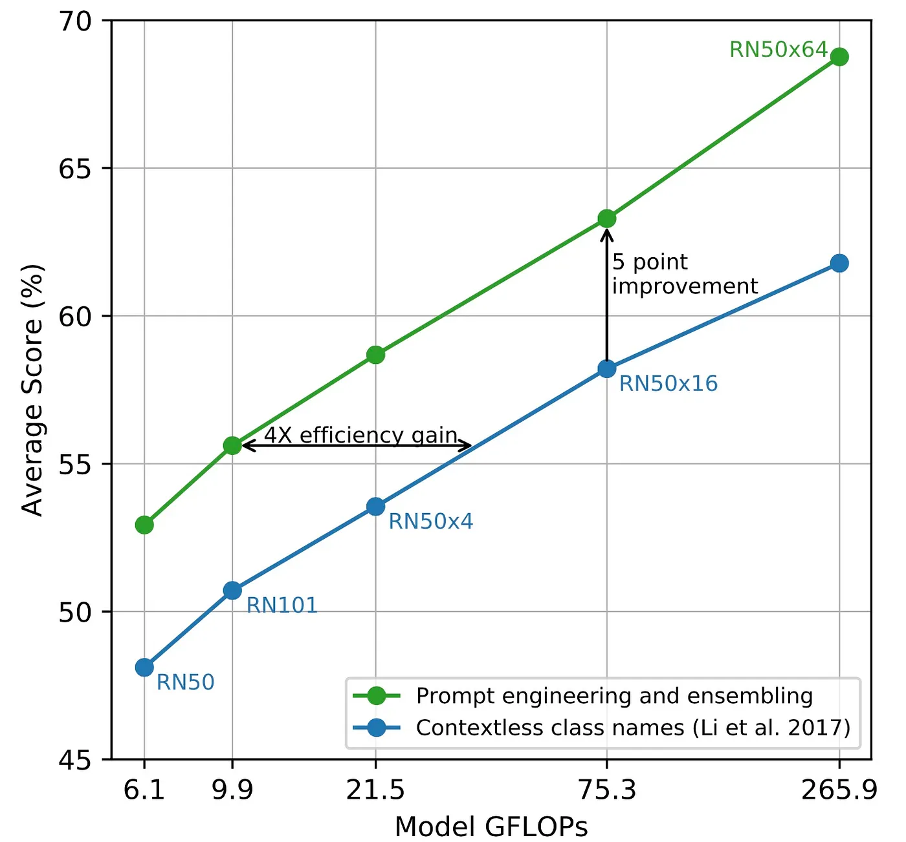
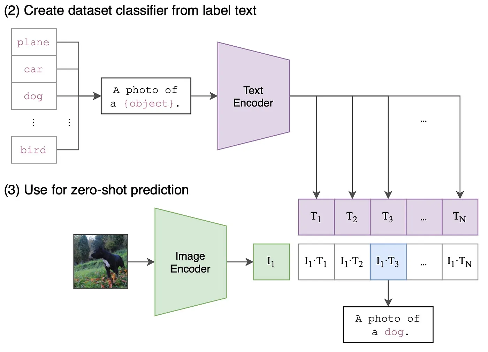
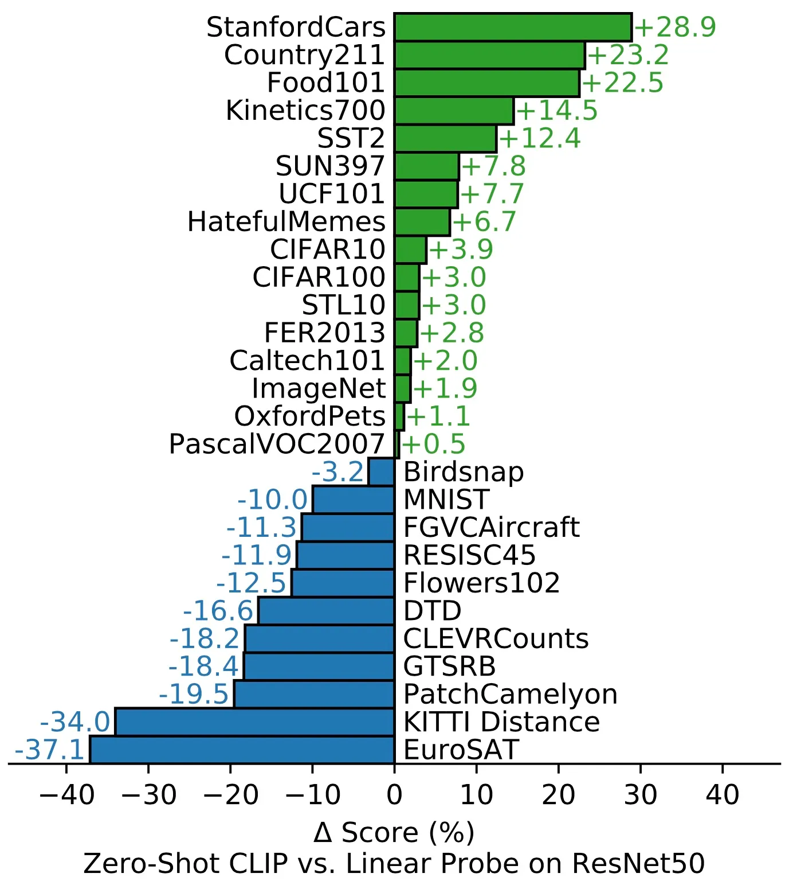

CLIP
监督学习的局限性
由图像分类模型生成的现成特征已被用于图像检索等其他任务中。
但是，这些特征的通用性不强，
因为分类模型是为识别一组固定的类别而训练的。
要在这组类别中添加任何新类别，
都需要为这一新类别收集额外的标注图像，
然后重新训练模型。
这是一个耗时且昂贵的过程。
能否利用自监督学习技术来解决这一问题？
能否利用图像说明来生成更好的图像表征并避免标注成本？ 也就是说，能否使用自然语言作为监督来学习视觉感知？
主要贡献
作者提出了一项预训练任务(CLIP = Contrastive Language Pre-training),
- 即预测哪张图片配哪句标题，以便从头开始学习SOTA图像表征。
为此，他们创建了一个从互联网上收集的包含4亿个(图片、文本)配对的数据集:
- 这种预先训练好的模型可以不费吹灰之力地应用到大多数任务中
- 而且不需要任何特定数据集的训练，就能与完全有监督的基线模型相媲美。
背景
CLIP从监督图像描述(supervised image captioning):
- 每张图片(image)都有相应的标题(caption),
- 用来训练一个模型，
- 预测相应图片标题中的准确词语。
这是一项艰巨的任务，因为一幅图像可以有多种不同的描述方式，但仍能表达相同的含义。
Contrastive Pre-training(对比预训练)
对比预训练:
- 考虑一批N个图像(images)及其相应的N个标题(captions)。
- 有了这些，我们可以再批次中创建NxN可能的(图像、文本)配对。
- 现在，任务是预测批次中的N个真实对
为此，CLIP通过联合训练:
- 图像编码器和文本编码器
- 来学习多模态嵌入空间。
- 图像编码器产生特征向量
I; - 类似地，文本编码器产生一个特征向量
T;
- 对于N个实数对，我们希望最大化
I和T之间的余弦相似度 - 对于\(N^2-N\)不正确的配对，我们希望最小化
I和T之间的余弦相似度
对比预训练
|----------| |---------------| |----------|
| Image | ---> | Image Encoder | ---> | I Vector | ---------------|
|----------| |---------------| |----------| V
|---------------|
| |
| |
| |
|----------| |---------------| |----------| | |
| Text | ---> | Text Encoder | ---> | T Vector |------> | |
|----------| |---------------| |----------| |---------------|
零样本预测
考虑图像分类任务， 预测时，对于单张图像，图像编码器将生成一个特征向量\(I_1\) 为了识别图像类别， 文本编码器会嵌入目标数据集的类别名称， 生成N个特征向量\(T_1,T_2,......\),以此类推。 N表示目标数据集中的类别数
Create dataset classifier from label text
|-------|
| plane |
| car | |-----------------------| |--------------|
| dog | -----> | A photo of a {object} | ----------------> | Text Encoder |
| bird | |-----------------------| |--------------|
| cat | |
|-------| |
|
Use for zero-shot prediction V
|-------| |---------------| |-----| |-----|-----|-----|-----|-----|
| Image | -----> | Image Encoder | -----> | I_1 | | T_1 | T_2 | T_3 | ... | T_N |
|-------| |---------------| |-----| |-----|-----|-----|-----|-----|
| |
| .* |
|-----------------------------------|
|
V
|--------|--------|--------|-----|--------|
|I_1.*T_1|I_1.*T_2|I_1.*T_3| ... |I_1.*T_N|
|--------|--------|--------|-----|--------|
|
V
|--------------------|
| A photo of a `dog` |
|--------------------|
模型细节
对于图像编码器，作者评估了两种不同的架构： - ResNet-50 - ViT
ResNet-50
他们使用了改进的ResNet-D架构,
并进行了抗锯齿矩阵-2模糊池化(anti-aliased rect-2 blur pooling)处理。
他们还用Transformer-style attention pooling mechanism替换了global average pooling layer
ViT(Vision Transformer)
作者在Transformer之前
组合patch和position embedding进行了额外的归一化处理( use an additional layer normalization to the combined patch and position embedding)，
并使用了略有不同的初始化方案。
对于文本编码器
使用本文中描述的具有:
- 6300万个参数(12层 512-wide)
- 8个注意力头的
Transformer
训练
作者训练的模型包括：
- 5个ResNet
- ResNet-50
- ResNet-101
- 3个EfficientNet风格的ResNet模型
- 3个ViT
- ViT-B/32
- ViT-B/16
- ViT-L/14
- The models are trained：
- 32 epochs
- using Adam optimizer with decoupled weight decay regularization
- decay the learning rate using a cosine schedule
- used a very large minibatch size of 32,768
提示工程的效果(Effect of Prompt Engineering)
图像分类数据集标注了与类名相对应的label IDs
由于CLIP模式在文本为一个完整句子的情况下进行训练的，
因此作者发现使用提示模版(prompt template)A photo of a {label}，
是与图像相关联的文本的良好默认设置。
我们可以看到在36各分类数据集中，使用提示工程的分类准确率提高了5个百分点。
Zero-shot CLIP vs. Linear Probe
在27个数据集中的16个数据集上:
- zero-shot CLIP分类器的表现优于基于ResNet-50特征的监督线性分类器。
- 不过，在大多数数据集上，CLIP的性能仍低于最新水平

Limitations(局限性)
- CLIP以下任务上性能不佳
- counting object in an image
- finding the distance to the nearest object object in an image
- 在MNIST等分布外数据集上的表现非常差
- 在数字OCR上性能很好
- 但在识别MNIST手写数字方面却不好(准确率88%)
- 使用CLIP进行few-shot learning会导致性能不佳
- from zero-shot to few-shot learning时，性能会出现反直觉的下降
- 由于CLIP是根据互联网上查询的文本图像对进行训练的
- 因此它将会学习许多社会偏见